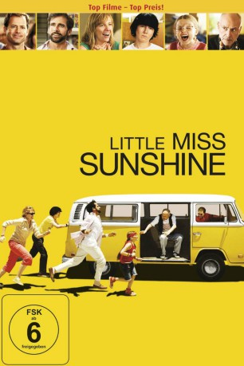

#801 Little Miss Sunshine
Auszeichnungen: 2 Oscars gewonnen für 2 Oscars nominiert 2 BAFTA-Awards gewonnen
 gesehen am 27.03.2015
gesehen am 27.03.2015
 
 IMDB-Wertung: 7.8 / 10
IMDB-Wertung: 7.8 / 10  Metascore: 80
Metascore: 80 
Die kleine Olive ist ein relativ normales, kleines Mädchen - doch irgendwie hat sie es bis in die Endrunde des "Little Miss Sunshine"-Schönheitswettbewerbs geschafft. Und weil jedes kleine Mädchen Unterstützung braucht, macht sich ihre komplette Familie mit ihr im VW-Bus auf den Weg zum Finale quer durch die Staaten.Dumm nur, daß in dieser Familie gar nichts gerade läuft. Ihr Vater ist ein erfolgloser Selbsthilfeguru, ihre Mutter muß sich um ihren schwulen Bruder Frank, einen College-Professor, der gerade einen Selbstmordversuch hinter sich hat, kümmern; ihr Bruder ist bekennender Nietzsche-Fan und hat ein Schweigegelübde abgelegt, bis er Jetpilot wird und ihr Großvater hat es sich nach seinem Rauswurf aus der Seniorenresidenz zwischen Pornoheften und Heroinschnupfen bequem gemacht.Beste Voraussetzungen für eine gute Reise...
Jahr: 2006
Dauer: 101 Minuten
FSK: 6
Land: USA Studio: Fox Searchlight PicturesTonspuren: DTS - ,
Untertitel: Deutsch,
Auflösung: 1080p (1920x800) Größe: 9195 MB
Genre: Komödie, Drama
Regisseur:  Jonathan Dayton,
Jonathan Dayton,  Valerie Faris
Valerie Faris
Drehbuch: Michael Arndt
Soundtrack: Mychael Danna, DeVotchKa
Darsteller:
 Abigail Breslin als Olive Hoover
Abigail Breslin als Olive Hoover Greg Kinnear als Richard Hoover
Greg Kinnear als Richard Hoover Paul Dano als Dwayne
Paul Dano als Dwayne Alan Arkin als Grandpa Edwin Hoover
Alan Arkin als Grandpa Edwin Hoover Toni Collette als Sheryl Hoover
Toni Collette als Sheryl Hoover Steve Carell als Frank Ginsberg
Steve Carell als Frank Ginsberg- Marc Turtletaub als Doctor #1
 Jill Talley als Cindy
Jill Talley als Cindy- Brenda Canela als Diner Waitress
 Julio Oscar Mechoso als Mechanic
Julio Oscar Mechoso als Mechanic- Chuck Loring als Convenience Store Proprietor
- Justin Shilton als Josh
- Gordon Thomson als Larry Sugarman
- Steven Christopher Parker als Teen Boy #1
 Bryan Cranston als Stan Grossman
Bryan Cranston als Stan Grossman- Paula Newsome als Linda
 Dean Norris als State Trooper McCleary
Dean Norris als State Trooper McCleary Beth Grant als Pageant Official Jenkins
Beth Grant als Pageant Official Jenkins Wallace Langham als Kirby
Wallace Langham als Kirby- Lauren Shiohama als Miss California
 Mary Lynn Rajskub als Pageant Assistant Pam
Mary Lynn Rajskub als Pageant Assistant Pam Geoff Meed als Biker Dad
Geoff Meed als Biker Dad Matt Winston als Pageant MC
Matt Winston als Pageant MC- Joan Scheckel als Judge
- Casandra Ashe als Girl in Hallway
 Mel Rodriguez als Officer Martinez
Mel Rodriguez als Officer Martinez- Alissa Anderegg als Pageant Contestant
- Lindsey Jordan als Pageant Contestant
- Annabelle Roberts als Pageant Contestant
- Erik David Barber als Photographer , uncredited
- Robert O'Connor als Pageant Judge #1 , uncredited
 Regis Philbin als Himself , uncredited
Regis Philbin als Himself , uncredited- John Walcutt als Doctor #2
- Jerry Giles als Funeral Home Worker
- Alexandria Alaman als Pageant Contestant
- Brittany Baird als Pageant Contestant
- Cambria Baird als Pageant Contestant
- Brenae Bandy als Pageant Contestant
- Kristen Holaas als Pageant Contestant
- Maliah Hudson als Pageant Contestant
- Destry Jacobs als Pageant Contestant
- Shane Murphy als Pageant Contestant
- Sydni Stevenson-Love als Pageant Contestant
- Nicole Stoehr als Pageant Contestant
- Lauren Yee als Pageant Contestant
- Terry Bolo als Pageant Worker , uncredited
- Marc De'Antone als Seminar Class , uncredited
- Tara Dawn Holland als Herself , archive footage, uncredited
- Ksenia Jarova als Pretty Girl , uncredited
- Alva Loomis als Hotel Security , uncredited
Datei: X:\2006(G-M)\Little Miss Sunshine (2006, FSK6, 1920x800).mkv seit 26.03.2015
Festplatte: HD 2005(G-Z)-2006(A-Z)
 Es gibt insgesamt 48 Filme in der Gruppe '2006(G-M)'
Es gibt insgesamt 48 Filme in der Gruppe '2006(G-M)'